15. Voronoi, Delaunay, and Stippling#
One rule, nearest wins, carves the plane into cells, and one nudge, move to the middle, teaches scattered points to space themselves like craftsmen. Today we tessellate the canvas into stained glass and then rebuild a Vermeer out of eighteen thousand dots of ink.
Today’s destination#
Girl with a Pearl Earring, reduced to eighteen thousand dots on cream paper. No lines, no grays: every mark is the same black ink, and the picture lives entirely in where the dots sit and how large they are. The placement is the work of an algorithm published in 2002, built from two ideas old enough to have beards: Voronoi’s cells and Lloyd’s centroids. By the end of today you can stipple any image you own.
# display this chapter's showpiece (generated by the last cell of this notebook)
import os
import matplotlib.pyplot as plt
import matplotlib.image as mpimg
showpiece_path = "../assets/outputs/ch15_showpiece.png"
if os.path.exists(showpiece_path):
image = mpimg.imread(showpiece_path)
plt.figure(figsize=(8, 9.5))
plt.imshow(image)
plt.axis("off")
plt.show()
else:
print("Not generated yet -- run the whole notebook once and come back.")
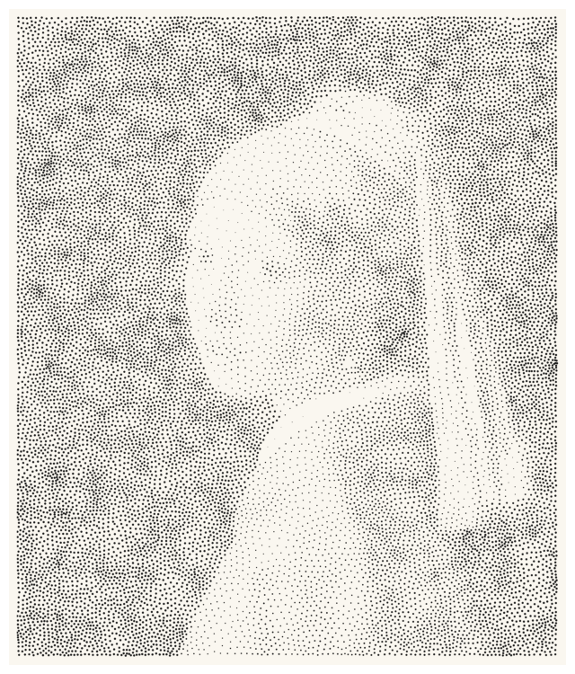
Context: pictures built from pieces#
In 1886, at the last Impressionist exhibition, Georges Seurat showed Un dimanche à la Grande Jatte (1884–86), three meters of Parisian Sunday assembled from countless small touches of unmixed color (Herbert 1991). Seurat absorbed the scientists of his day, directly and through the writer Charles Blanc: Michel Eugène Chevreul, whose law of simultaneous contrast (1839) described how adjacent colors alter each other, and Ogden Rood, whose Modern Chromatics (1879) distinguished mixing lights from mixing pigments. The divisionist wager was that dots of pure color, fused by the eye at viewing distance, would give a luminosity that mixing on the palette kills. Critics have quarreled with the optics ever since (optical mixture of pigment dots drifts toward gray, not brilliance; Gage 1993), but the discipline held: a continuous world, rebuilt from discrete, countable marks.
The wager itself was ancient. The mosaicists of Ravenna had assembled emperors from tesserae by the sixth century: in San Vitale (consecrated 547), Justinian and Theodora face each other across the choir in tens of thousands of glass and stone pieces, each one claiming its small region of the picture (Andreescu-Treadgold and Treadgold 1997). When Gustav Klimt traveled to Ravenna in 1903, the gold went straight into his portraits; the mosaic logic, a surface divided into cells, each cell one material, is visible in the Stoclet Frieze and everything golden he made after (Klimt-Foundation, Gustav Klimt-Datenbank). Printmakers ran the same logic in monochrome: stipple engraving, from Giulio Campagnola’s experiments around 1510 to Francesco Bartolozzi’s fashionable prints of the eighteenth century, renders tone purely through the spacing and size of dots (Griffiths 1996). And Chuck Close built enormous portrait heads cell by cell on a penciled grid from the late 1960s; by the 1980s each cell had become a small abstract painting that dissolves into skin at ten paces (Storr 1998).
In 2002 the computer graphics researcher Adrian Secord published the modern member of this family: Weighted Voronoi Stippling (Secord 2002), an algorithm that places dots so evenly, yet so faithfully to an image’s tones, that the results pass for a patient engraver’s work. It is built from two pieces of honest geometry: the Voronoi tessellation, which assigns every location to its nearest dot, and Lloyd’s relaxation, which repeatedly centers each dot in its own territory. Today we build both pieces by hand, then assemble Secord’s machine and aim it at Vermeer.
Nearest wins#
Scatter a few seed points on the plane. The Voronoi cell of seed \(s_i\) is the set of all locations closer to it than to any other seed:
(Read the braces aloud: “the set of locations \(p\) whose distance \(d\) to seed \(i\) is at most their distance to any other seed \(j\)”.) The tessellation (Parkettierung) is named after the mathematician Georgy Voronoy (1908), and it needs no drawing instructions at all: the cells simply happen wherever the rule is evaluated. So let us evaluate it, brute force, on a pixel grid: np.meshgrid from chapter 8 gives every pixel’s coordinates, we measure the distance to each seed (straight-line distance is Pythagoras on the coordinate differences, \(\sqrt{\Delta x^2 + \Delta y^2}\), exactly the sqrt of squares in the code), and np.argmin reports the index of the smallest value, that is, which seed won that pixel. If the measuring feels familiar, it should: chapter 11’s Worley loop computed exactly these nearest-seed distances and rendered them as texture (the stone of \(F_1\), the cracked glaze of \(F_2 - F_1\)); today we harvest the regions themselves, cells with areas, neighbors and polygons, and hand them to the library that knows their geometry.
# brute-force Voronoi: every pixel asks "which seed is nearest to me?"
import numpy as np
rng = np.random.default_rng(12)
seeds = rng.uniform(0, 100, size=(5, 2))
grid_x, grid_y = np.meshgrid(np.linspace(0, 100, 400), np.linspace(0, 100, 400))
distances = []
for seed_x, seed_y in seeds:
distances.append(np.sqrt((grid_x - seed_x)**2 + (grid_y - seed_y)**2))
nearest = np.argmin(np.array(distances), axis=0) # index of the winning seed
plt.figure(figsize=(5.5, 5.5))
plt.imshow(nearest, cmap="Pastel1", origin="lower", extent=[0, 100, 0, 100])
plt.scatter(seeds[:, 0], seeds[:, 1], color="#1A1A1A", s=25)
plt.title(f"{len(seeds)} seeds, {len(seeds)} cells", fontsize=9,
color="#6B6B6B")
plt.show()
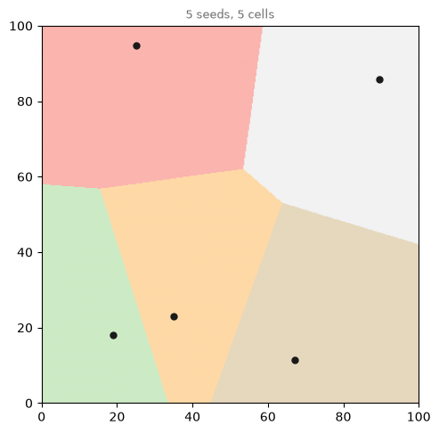
Straight borders, every border exactly halfway between two seeds: the rule contains its own geometry. Nature evaluates this rule constantly, which is why Voronoi patterns look familiar: dragonfly wings, cracked mud, giraffe patches, foam.
Try it. Change the seed of rng, or use size=(12, 2) for twelve seeds. The code never mentions the number five anywhere else; the picture just follows the points.
Connect every pair of seeds whose cells share a border and you get the Delaunay triangulation, the tessellation’s dual, named after Boris Delaunay (1934), who dedicated the paper to Voronoy’s memory. Computing cells fast (without touching every pixel) takes a clever sweep algorithm that is not today’s lesson; the brute force above was the lesson. So from here we let scipy do the geometry:
# the library version, with its dual: Voronoi cells and Delaunay triangles
from scipy.spatial import Voronoi, Delaunay, voronoi_plot_2d
points = rng.uniform(0, 100, size=(18, 2))
vor = Voronoi(points)
tri = Delaunay(points)
fig, ax = plt.subplots(figsize=(6, 6))
voronoi_plot_2d(vor, ax=ax, show_vertices=False, line_colors="#1B4B9B")
ax.triplot(points[:, 0], points[:, 1], tri.simplices, color="#D02433",
linewidth=0.8)
ax.set_xlim(0, 100)
ax.set_ylim(0, 100)
ax.set_title("Voronoi cells (blue) and their Delaunay dual (red)",
fontsize=9, color="#6B6B6B")
plt.show()
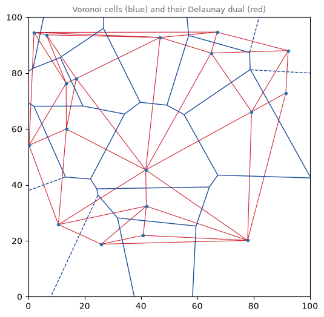
Stained glass from random points#
For artwork we render the cells ourselves: fill each one with a palette color and lead the edges in dark, and the tessellation becomes a window. Two practical details. First, scipy’s vor.point_region tells us which region belongs to which seed, and vor.vertices[region] returns that cell’s corner points, ready for ax.fill. Second, the outermost cells are infinite (they stretch to the horizon), which ruins polygon drawing; the standard trick is to add a ring of helper seeds far outside the canvas. The helpers absorb the infinities, every real cell becomes a finite polygon, and we simply never draw the helpers.
# stained glass: fill each cell with a palette color, lead the edges in dark
import sys
sys.path.append("..")
from agap.helpers import PALETTES, save_artwork
def stained_glass(n_cells, palette_name, seed, size=100, figsize=7):
rng = np.random.default_rng(seed)
inner = rng.uniform(0, size, size=(n_cells, 2))
angles = np.linspace(0, 2 * np.pi, 16, endpoint=False)
ring = size / 2 + size * 1.5 * np.stack([np.cos(angles), np.sin(angles)],
axis=1)
vor = Voronoi(np.vstack([inner, ring])) # the ring tames the border cells
palette = PALETTES[palette_name]
fig, ax = plt.subplots(figsize=(figsize, figsize))
for i in range(n_cells):
region = vor.regions[vor.point_region[i]]
if -1 in region: # still infinite despite the ring: skip it
continue
corners = vor.vertices[region]
color = palette[int(rng.integers(len(palette)))]
ax.fill(corners[:, 0], corners[:, 1], color=color,
edgecolor="#1A1A1A", linewidth=2.5)
ax.set_xlim(0, size)
ax.set_ylim(0, size)
ax.set_aspect("equal")
ax.axis("off")
plt.show()
return fig
art_1 = stained_glass(40, "bauhaus", seed=5)
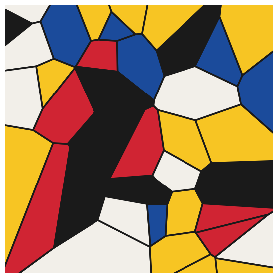
# two more windows: dense Kelly spectrum, sparse Rothko gloom
art_2 = stained_glass(150, "kelly", seed=8, figsize=6)
art_3 = stained_glass(15, "rothko_dark", seed=2, figsize=6)
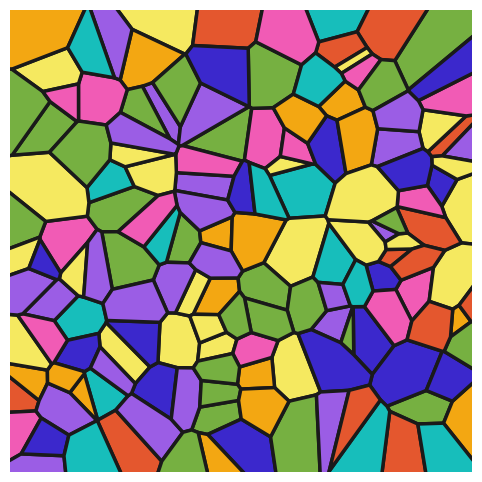
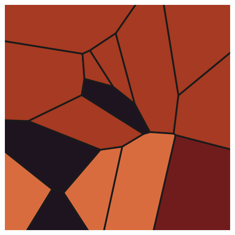
Look and compare. Forty Bauhaus cells read as a cheerful church window; a hundred and fifty Kelly cells shimmer like confetti; fifteen Rothko cells become heavy, almost architectural. The code is identical. Is it the count or the palette doing the emotional work here? Try swapping them (15 kelly cells, 150 rothko cells) before you answer.
Points that space themselves#
Look again at any of the windows above: random points clump and leave voids (chapter 2 taught us uniform randomness is lumpy). Mosaic and stippling both want the opposite: evenness without rigidity, dots that keep polite distances yet stand in no rows. The classic recipe is Lloyd’s relaxation, proposed by Stuart Lloyd at Bell Labs in 1957 (and only properly published in 1982):
compute every point’s Voronoi cell,
move each point to its cell’s centroid (Schwerpunkt), the average of all locations in the cell,
repeat.
Crowded points sit in small cells and get pushed apart; lonely points own huge cells and get pulled toward the middle of their emptiness. For the centroid we recycle the brute-force idea from the opening: assign every pixel of a fine grid to its nearest point, then average the pixel coordinates that each point won. (The [:, None, :] indexing below inserts a brand-new axis so that every pixel meets every point in one broadcast subtraction: chapter 14’s broadcasting idea, taken one step further.)
# one Lloyd step: every point moves to the centroid of its Voronoi cell
def lloyd_step(points, size=100, resolution=150):
coords = np.linspace(0, size, resolution)
grid_x, grid_y = np.meshgrid(coords, coords)
pixels = np.stack([grid_x.ravel(), grid_y.ravel()], axis=1)
gaps = pixels[:, None, :] - points[None, :, :] # every pixel, every point
# np.linalg.norm measures each gap vector's length
nearest = np.argmin(np.linalg.norm(gaps, axis=2), axis=1)
moved = points.copy()
for i in range(len(points)):
won = pixels[nearest == i]
if len(won) > 0:
moved[i] = won.mean(axis=0)
return moved
# watch evenness emerge: the same 60 points after 0, 1, 4 and 15 steps
rng = np.random.default_rng(3)
pts = rng.uniform(0, 100, size=(60, 2))
fig, axes = plt.subplots(1, 4, figsize=(13, 3.4))
steps_done = 0
for ax, target in zip(axes, [0, 1, 4, 15]):
while steps_done < target:
pts = lloyd_step(pts)
steps_done += 1
ax.scatter(pts[:, 0], pts[:, 1], s=18, color="#1A1A1A")
ax.set_xlim(0, 100)
ax.set_ylim(0, 100)
ax.set_aspect("equal")
ax.set_title(f"after {target} steps", fontsize=9, color="#6B6B6B")
plt.show()
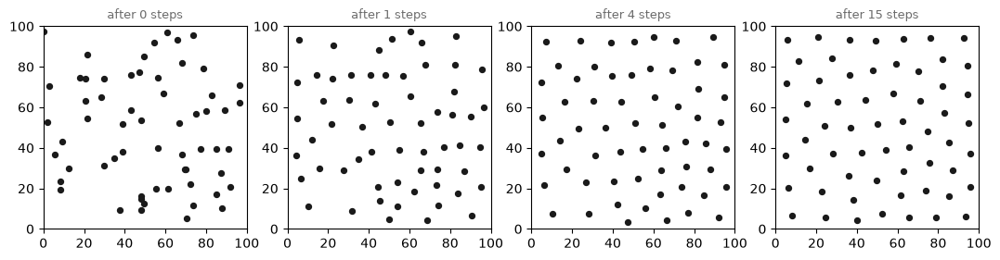
Fifteen steps turn a lumpy scatter into something a jeweler could have laid out: even, but nowhere gridded. This texture has a name, blue noise, borrowed from audio engineering (noise with mostly high frequencies: no large-scale clumps), and it is precious in graphics precisely because human eyes forgive it (Ulichney 1988). Compare it mentally to chapter 2’s grids: this is a third kind of arrangement, neither order nor disorder.
Ink where the painting is dark#
Now the payoff. Johannes Vermeer’s Girl with a Pearl Earring (c. 1665, Mauritshuis, Den Haag) is mostly darkness with one luminous face, dramatic stippling material (Mauritshuis, collection entry). The plan: convert the painting to grayscale, read darkness = 1 - brightness as a probability map, and scatter dots by rejection sampling: propose a random location, keep it with probability equal to the darkness underneath, chapter 2’s weighted choice gone continuous.
The raw map needs two engraver’s adjustments first, and they are worth naming because every stippler makes them. This painting’s background is near-black everywhere, so left alone it would swallow the entire dot budget and the girl would become empty negative space (try it later: sample from plain darkness and watch it happen). So we cap the darkness with np.clip, above the cap, darker buys no more ink, and apply a gamma of 1.4, a small power that thins the midtones so the face keeps its light. Tone in, ink out, but through a curve the artist chose.
# load the Vermeer small and in grayscale; darkness becomes probability
from PIL import Image
original = Image.open("../assets/images/vermeer_pearl_earring.jpg")
scale_w = 480
scale_h = int(original.height * scale_w / original.width)
gray = np.asarray(original.convert("L").resize((scale_w, scale_h))) / 255
darkness = 1 - gray
tone = np.clip(darkness, 0, 0.82)**1.4 # cap the blacks, thin the midtones
def sample_by_map(n_dots, probability, rng):
height, width = probability.shape
dots = []
while len(dots) < n_dots:
x, y = rng.uniform(0, width), rng.uniform(0, height)
if rng.random() < probability[int(y), int(x)]:
dots.append([x, y])
return np.array(dots)
rng = np.random.default_rng(12)
dots = sample_by_map(8000, tone, rng)
print("dots placed:", len(dots))
dots placed: 8000
# the raw sample: faithful to the tones, but clumpy as all randomness is
fig, axes = plt.subplots(1, 2, figsize=(10, 6.2))
axes[0].imshow(gray, cmap="gray")
axes[0].set_title("the map", fontsize=9, color="#6B6B6B")
axes[1].scatter(dots[:, 0], dots[:, 1], s=1.2, color="#1A1A1A", linewidths=0)
axes[1].set_xlim(0, scale_w)
axes[1].set_ylim(scale_h, 0)
axes[1].set_aspect("equal")
axes[1].set_title("8000 rejection-sampled dots", fontsize=9, color="#6B6B6B")
for ax in axes:
ax.axis("off")
plt.show()
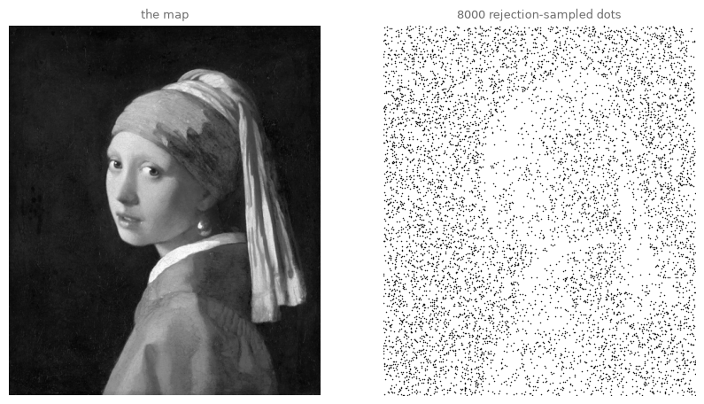
She is already there, but the dots clump and leave scratchy voids: raw randomness, chapter 2’s oldest lesson. Secord’s contribution is the cure (Secord 2002): run Lloyd’s relaxation, but compute each centroid weighted by the tone map,
so points spread evenly within the tonal structure instead of erasing it: dark regions keep their dense crowds, every crowd becomes orderly. (The formula is less than it looks: read \(\sum_{p \in V_i}\) as “add up, one term per pixel \(p\) of cell \(i\)”; the whole thing is chapter 0’s mean, with each pixel counted in proportion to its weight \(w(p)\).)
Two speed tools, because our brute-force distance table would now be 8000 points times roughly a quarter of a million pixels. scipy.spatial.cKDTree is this chapter’s one true black box: a search tree that answers “which of these 8000 points is nearest to this pixel?” thousands of times faster than our table (the idea inside: recursively split the plane so most points never need checking). And np.bincount(nearest, weights=w) sums the weights landing on each point index in one call, our centroid sums without a Python loop.
# weighted Lloyd: centroids weighted by image darkness, at KD-tree speed
# (black box: skim the code; the idea is in the text above)
from scipy.spatial import cKDTree
def weighted_lloyd(dots, weight_map, iterations=30):
height, width = weight_map.shape
grid_x, grid_y = np.meshgrid(np.arange(width), np.arange(height))
pixels = np.stack([grid_x.ravel(), grid_y.ravel()], axis=1).astype(float)
weights = weight_map.ravel() + 1e-9
moved = dots.copy()
for iteration in range(iterations):
nearest = cKDTree(moved).query(pixels)[1]
weight_sums = np.bincount(nearest, weights=weights, minlength=len(moved))
x_sums = np.bincount(nearest, weights=weights * pixels[:, 0],
minlength=len(moved))
y_sums = np.bincount(nearest, weights=weights * pixels[:, 1],
minlength=len(moved))
won_pixels = weight_sums > 0
moved[won_pixels, 0] = x_sums[won_pixels] / weight_sums[won_pixels]
moved[won_pixels, 1] = y_sums[won_pixels] / weight_sums[won_pixels]
return moved
dots = weighted_lloyd(dots, tone, iterations=40)
print("40 iterations of weighted Lloyd done")
40 iterations of weighted Lloyd done
# render: one ink dot per point, its size following the local darkness
from agap.helpers import PAPER
def stipple_art(dots, darkness, dot_scale=6.0, ink="#1A1A1A", paper=PAPER,
figsize=8):
height, width = darkness.shape
# two index arrays pick one pixel per dot (rows = y, columns = x)
local = darkness[dots[:, 1].astype(int), dots[:, 0].astype(int)]
fig, ax = plt.subplots(figsize=(figsize, figsize * height / width))
fig.patch.set_facecolor(paper)
ax.set_facecolor(paper)
ax.scatter(dots[:, 0], dots[:, 1], s=dot_scale * local**1.5 + 0.15,
color=ink, linewidths=0)
ax.set_xlim(0, width)
ax.set_ylim(height, 0)
ax.set_aspect("equal")
ax.axis("off")
plt.show()
return fig
art_stipple = stipple_art(dots, darkness)
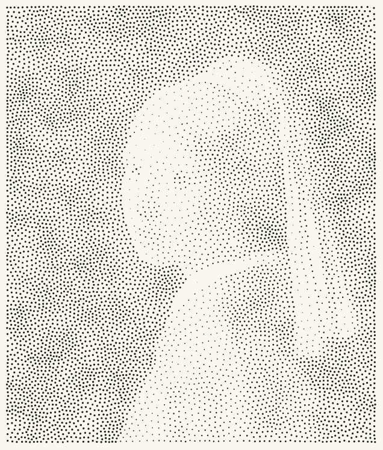
Look and compare this against the raw sample two figures up: same painting, same number of dots. The relaxed version breathes; tone is carried by dot density and size while the spacing stays calm. That calm is the blue noise, and it is what separates machine stippling that looks engraved from machine stippling that looks like static.
Second machine: a stained-glass wave#
(If the session is running long, this second machine reads just as well at home.)
The stippler subtracts color; the mosaicist keeps it. For a Voronoi mosaic of Hokusai’s Great Wave (chapter 8’s old acquaintance) we want seeds where the image is busiest, and busyness is measurable: chapter 12’s np.gradient returns how fast brightness changes at every pixel, and the length of that change vector is the edge magnitude. (That single line is a preview: chapter 16 is entirely about such filters.) We reuse sample_by_map unchanged, feeding it edges instead of darkness: the sampler never cared what the map meant.
# where is the wave busiest? edge magnitude will place our seeds
wave = np.asarray(Image.open("../assets/images/hokusai_wave.jpg")
.resize((480, 323))) / 255
wave_gray = wave.mean(axis=2) # average over the color axis: grayscale
d_row, d_col = np.gradient(wave_gray)
edge_map = np.sqrt(d_row**2 + d_col**2)
edge_map = edge_map / edge_map.max()
fig, axes = plt.subplots(1, 2, figsize=(11, 3.9))
axes[0].imshow(wave)
axes[0].set_title("the painting", fontsize=9, color="#6B6B6B")
axes[1].imshow(edge_map, cmap="gray")
axes[1].set_title("its edge magnitude (bright = busy)", fontsize=9,
color="#6B6B6B")
for ax in axes:
ax.axis("off")
plt.show()
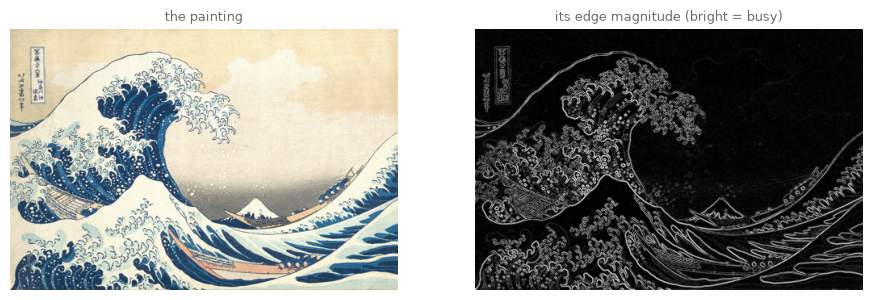
# the Great Wave as stained glass: small cells where the drawing is busy
rng = np.random.default_rng(19)
# the +0.02 floor grants the calm sky a few seeds too
seeds = sample_by_map(600, edge_map * 0.9 + 0.02, rng)
angles = np.linspace(0, 2 * np.pi, 16, endpoint=False)
# helper ring around the canvas center (240, 161), far outside at radius 900
ring = np.stack([240 + 900 * np.cos(angles), 161 + 900 * np.sin(angles)],
axis=1)
vor = Voronoi(np.vstack([seeds, ring]))
fig, ax = plt.subplots(figsize=(10, 6.7))
for i in range(len(seeds)):
region = vor.regions[vor.point_region[i]]
if -1 in region:
continue
corners = vor.vertices[region]
color = wave[int(seeds[i, 1]), int(seeds[i, 0])]
ax.fill(corners[:, 0], corners[:, 1], color=color,
edgecolor="#1A1A1A", linewidth=0.6)
ax.set_xlim(0, 480)
ax.set_ylim(323, 0)
ax.set_aspect("equal")
ax.axis("off")
plt.show()
art_wave = fig
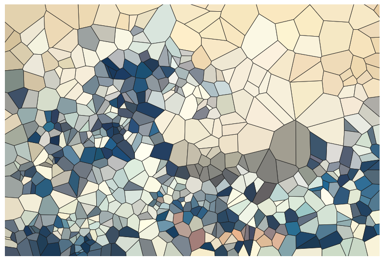
Each cell wears the painting’s color at its own seed, so dense seeding gives the wave’s crest hundreds of small sharp facets while the empty sky stays in a few broad panes: detail spent exactly where the drawing spends it. Look closely at Ravenna’s mosaics and the tesserae run the same way, small in the faces, large in the gold.
Try it. Lower the 600 to 80 and the wave dissolves toward abstraction; raise it to 2000 (a few extra seconds) and the mosaic approaches the print itself. Somewhere in between is the count where the picture is most interesting, which is an aesthetic judgment no formula makes for you.
Export your artwork#
Stipple or mosaic, Vermeer or your own image (drop a file into assets/images/ and reuse the loading pattern above; portraits with dark grounds stipple magnificently). Adjust dot_scale, ink and paper, replace yourname, run. As always, the sampling seed is yours to change: every seed is a different swarm of dots.
# save YOUR artwork: pick dots, scale, ink and paper, replace 'yourname'
my_artwork = stipple_art(dots, darkness, dot_scale=7.0)
saved_path = save_artwork(my_artwork, "yourname", chapter=15)
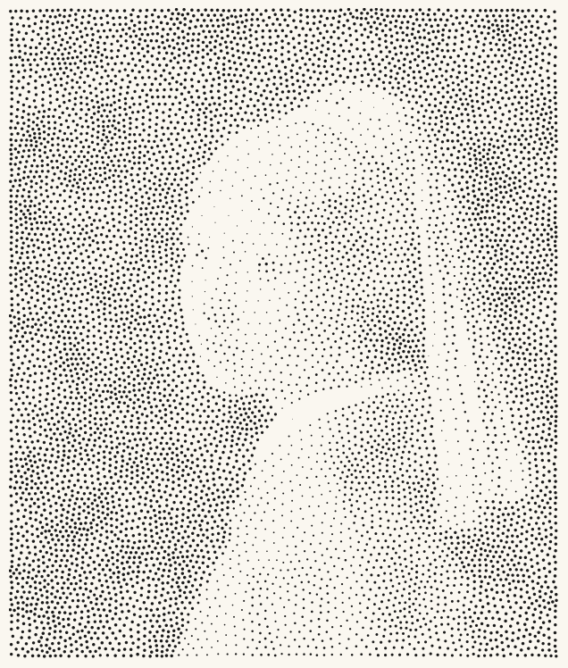
saved: assets/outputs/ch15_yourname.png
Exercises#
(a) Parameter exploration: when does she appear? Rerun the stippling pipeline (sample, relax, render) with 1000, 5000 and 20000 dots. At which count do you first recognize the girl, and at which does the earring itself materialize? Note that the Lloyd stage matters too: compare 20000 dots with 5 iterations against 5000 dots with 40, and decide which budget buys more likeness.
(b) Code modification: stipples in color. Give every dot the painting’s own color at its position instead of black ink. Load the color version at the same small size, index it with the dot coordinates, and pass the result to plt.scatter’s c= argument. One aesthetic decision matters: on cream paper, colored dots look washed out; give them a dark room instead.
Solution
color_small = np.asarray(original.convert("RGB")
.resize((scale_w, scale_h))) / 255
xs = dots[:, 0].astype(int)
ys = dots[:, 1].astype(int)
dot_colors = color_small[ys, xs] # each dot samples its own pixel
local = darkness[ys, xs]
night = "#14121C"
fig, ax = plt.subplots(figsize=(8, 8 * scale_h / scale_w))
fig.patch.set_facecolor(night)
ax.set_facecolor(night)
ax.scatter(dots[:, 0], dots[:, 1], s=7 * local**2 + 0.3, c=dot_colors,
linewidths=0)
ax.set_xlim(0, scale_w)
ax.set_ylim(scale_h, 0)
ax.set_aspect("equal")
ax.axis("off")
plt.show()
On the dark ground the logic inverts beautifully: Vermeer’s shadows melt into the paper and the lit dots carry the image, less Seurat, more mosaic by candlelight. (color_small[ys, xs] picks one pixel per dot in a single indexing call, chapter 6’s numpy indexing earning its keep.)
(c) Creative challenge: the true mosaic. In the wave mosaic, each cell took the color of a single pixel, its seed. Upgrade it: fill each cell with the mean color of all the pixels inside it. You already own every tool: assign pixels to seeds with cKDTree, then average per cell with np.bincount once per color channel (or a loop over cells, slower and fine). Compare against the seed-sampled version: the mean-color mosaic is calmer, almost woven. Then push the cell count down until the painting sits exactly at the edge of recognizability, and consider: Chuck Close spent months per painting deciding what goes into each cell (Storr 1998); what did your mean just decide for you?
Further reading#
Adrian Secord, “Weighted Voronoi Stippling”, Proceedings of NPAR 2002: seven readable pages; our pipeline is his Section 3.
Robert L. Herbert, Georges Seurat, 1859–1891 (Metropolitan Museum of Art, 1991): the great Seurat catalogue, with the divisionist color theory taken seriously and skeptically.
John Gage, Colour and Culture (1993), chapter on the scientific color theories of the nineteenth century: what painters actually took from Chevreul and Rood.
The scipy.spatial documentation: Voronoi, Delaunay and KD-trees, with pictures; the tools of today, formally introduced.
References#
Andreescu-Treadgold, I., and Treadgold, W. (1997). Procopius and the Imperial Panels of S. Vitale. The Art Bulletin, 79(4), 708–723. doi:10.2307/3046283. The imperial mosaics and the consecration of San Vitale, closely re-examined.
Chevreul, M. E. (1839). De la loi du contraste simultané des couleurs et de l’assortiment des objets colorés. Pitois-Levrault. Digitized at Gallica. The law of simultaneous contrast, from the director of dyeing at the Gobelins.
Delaunay, B. (1934). Sur la sphère vide. Izvestia Akademii Nauk SSSR, Otdelenie Matematicheskikh i Estestvennykh Nauk, 7, 793–800. The triangulation paper, dedicated to Voronoy’s memory.
Gage, J. (1993). Colour and Culture: Practice and Meaning from Antiquity to Abstraction. Thames and Hudson. Weighs what the divisionists took from the color scientists, and what the optics actually delivers.
Griffiths, A. (1996). Prints and Printmaking: An Introduction to the History and Techniques. 2nd ed. British Museum Press. The standard survey of print techniques, stipple engraving included.
Herbert, R. L. (1991). Georges Seurat, 1859–1891. The Metropolitan Museum of Art. Free online at the Met. The catalogue behind this chapter’s Seurat paragraph.
Klimt-Foundation, Wien. Italy. Gustav Klimt-Datenbank: Netzwerk Wien 1900. Database entry. Documents the 1903 Ravenna journeys and the mosaics’ effect on the golden portraits and the Stoclet Frieze.
Lloyd, S. P. (1982). Least squares quantization in PCM. IEEE Transactions on Information Theory, 28(2), 129–137. doi:10.1109/TIT.1982.1056489. Written at Bell Labs in 1957 and circulated for a quarter century before print.
Mauritshuis, Den Haag. Girl with a Pearl Earring, Johannes Vermeer, c. 1665 (inv. 670). Collection entry.
Rood, O. N. (1879). Modern Chromatics, with Applications to Art and Industry. D. Appleton and Company. Digitized at the Library of Congress.
Secord, A. (2002). Weighted Voronoi stippling. Proceedings of the 2nd International Symposium on Non-Photorealistic Animation and Rendering (NPAR 2002), 37–43. doi:10.1145/508530.508537. This chapter’s pipeline is his Section 3.
Storr, R. (1998). Chuck Close. The Museum of Modern Art. The retrospective catalogue: the gridded portrait heads from 1968 onward.
Ulichney, R. A. (1988). Dithering with blue noise. Proceedings of the IEEE, 76(1), 56–79. doi:10.1109/5.3288. Names and measures the point texture the relaxation converges toward.
Voronoï, G. (1908). Nouvelles applications des paramètres continus à la théorie des formes quadratiques. Deuxième mémoire. Recherches sur les parallélloèdres primitifs. Journal für die reine und angewandte Mathematik, 134, 198–287. doi:10.1515/crll.1908.134.198.
Appendix: regenerate the showpiece#
This last cell (re)creates the image shown at the top of the notebook: eighteen thousand dots, fifty relaxation steps, well under a minute. It runs automatically with Restart & Run All. At home, try 30000 dots with dot_scale around 3.
# regenerate this chapter's showpiece: the stippled Vermeer, dense and calm
rng_show = np.random.default_rng(1665)
show_dots = sample_by_map(18000, tone, rng_show)
show_dots = weighted_lloyd(show_dots, tone, iterations=50)
showpiece = stipple_art(show_dots, darkness, dot_scale=4.2, figsize=9)
saved_path = save_artwork(showpiece, "showpiece", chapter=15)
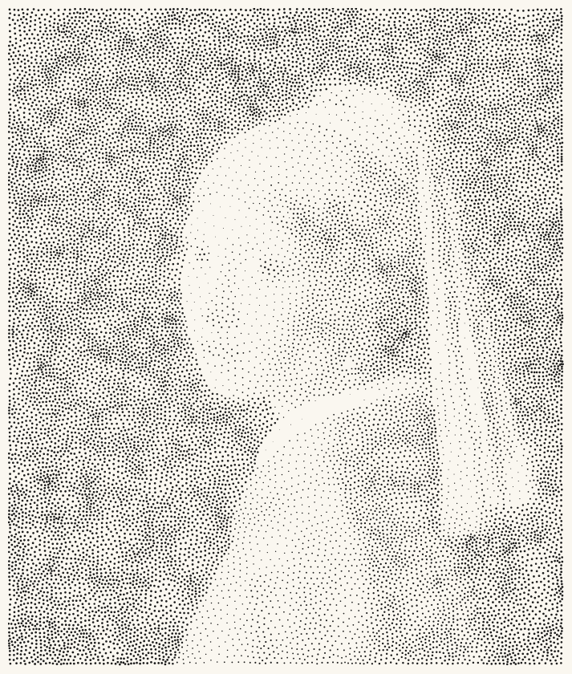
saved: assets/outputs/ch15_showpiece.png